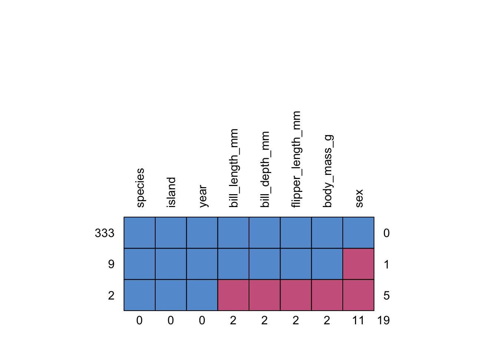

연습장
r 코드 연습
library(ggplot2)
ggplot(iris, aes(x=Sepal.Length, y=Sepal.Width, color=Species)) +
geom_point() +
labs(x="꽃잎 길이", y="꽃잎 넓이") + theme_bw()
## Sepal.Length Sepal.Width Petal.Length Petal.Width Species
## 1 5.1 3.5 1.4 0.2 setosa
## 2 4.9 3.0 1.4 0.2 setosa
## 3 4.7 3.2 1.3 0.2 setosa
## 4 4.6 3.1 1.5 0.2 setosa
## 5 5.0 3.6 1.4 0.2 setosa
## 6 5.4 3.9 1.7 0.4 setosa